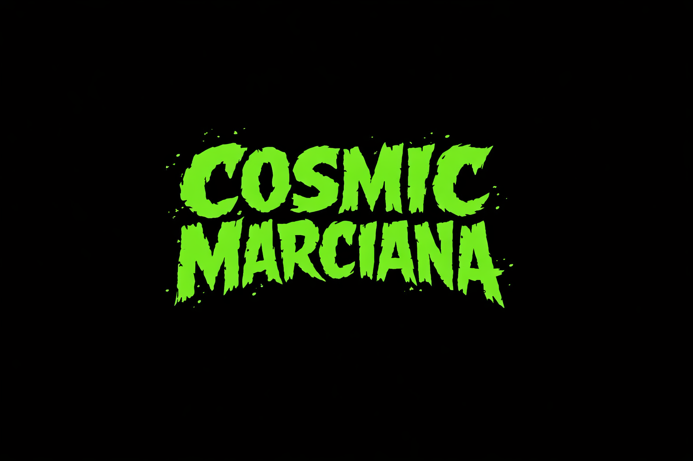

Te regalo mi música.
Si quieres apoyar para grabar vinilos y seguir haciendo ruido cósmico,
puedes aportar algo 💚


ruido psicoeléctrico desde Marte
pop electrónico, señales rotas y errores cósmicos
cosmicmarciana@gmail.com